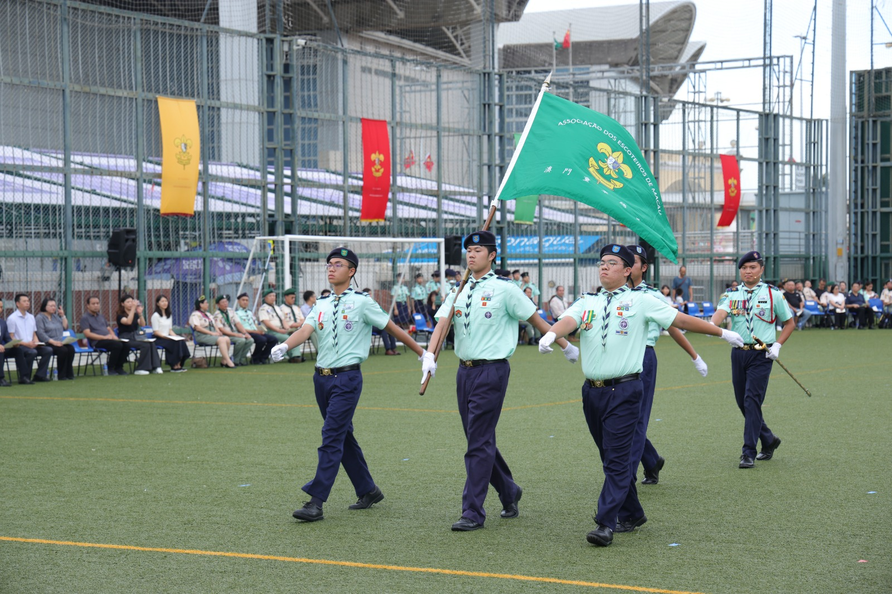
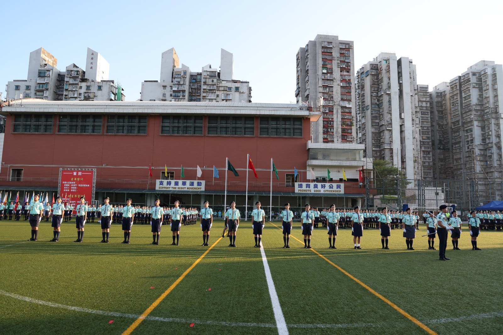
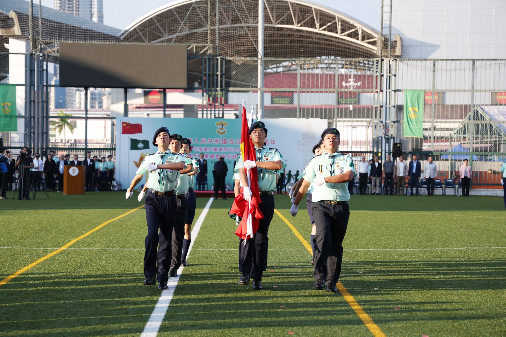

標準步操及禮儀
透過隊列學習與訓練，統一步操動作及口令，培養紀律與團隊精神。本頁整理澳門童軍總會隊列改革的發展，以及訓練和旅部督導工作的相關紀錄。

隊列改革與正式啟用
澳門童軍總會於 2019 年決定改革步操及口令，其後受新冠疫情影響而延後。疫情過後，在中國人民解放軍駐澳部隊協助下，總會於 2023 年初全面推進隊列學習和訓練，並於 2024 年周年大匯操暨頒獎典禮中正式宣佈啟用「澳門童軍總會隊列」。
- 2019決定推動步操及口令改革。
- 2023年初全面推進隊列學習和訓練。
- 2024周年大匯操暨頒獎典禮正式宣佈啟用隊列。
在總會成立 41 周年之際啟用隊列，亦是全體童軍向中華人民共和國成立 75 周年及澳門特別行政區成立 25 周年的獻禮。
閱讀隊列啟用儀式致辭摘錄
摘錄：2024 年度澳門童軍周年大匯操暨頒獎典禮，梁少培理事長致辭稿。
今年是澳門雙慶之年，也是澳門童軍總會別具歷史意義的一年。澳門童軍總會自2019年決定把童軍的步操和口令進行改革，但礙於新冠疫情的影響未能如期落實。疫情過後，總會立刻啟動機制，在駐澳部隊的幫助下，在2023年初全面著手推進隊列的學習和訓練。經過數年的準備，「澳門童軍總會隊列」在今天的典禮中正式宣佈啟用。同時，以此作為澳門童軍總會及全體童軍向新中國成立75周年和澳門特別行政區成立25周年的獻禮。在澳門童軍總會成立41周年之際，改用《隊列》，這是一項歷史性的轉變，極具深遠意義，突顯了澳門童軍運動邁向一個新征程的開始。
藉著今次活動，本人代表澳門童軍總會和全體童軍，對中國人民解放軍駐澳部隊所提供的隊列教學和訓練，給予大力的支持，表示衷心的感謝！澳門童軍隊列訓練從零開始，短短一年時間的訓練中，在駐澳部隊軍官們的循循教導下，發展到今天的正式啟用，深深地感受到祖國和駐澳部隊對澳門青年發展的關心和重視，展示出威武文明之師的崇高形象。往後，隨著隊列訓練的持續進行，除了童軍得到正規的訓練外，必將加強童軍的愛國心、澳門情，當好擁軍愛澳的標兵。


隊列訓練紀錄
訓練部配合總會訓練工作，設計了一系列隊列訓練計劃。以下為當時公布的安排，供查閱歷史紀錄。
- 第一級隊列訓練班：原定於 2026 年 4 月 19 日（星期日）在總會氹仔總部舉行；簡報記載共 23 位童軍完成報名手續。
- 第二級隊列訓練班：原定於 2026 年 6 月 14 日（星期日）在總會氹仔總部舉行。
五年工作計劃
2026 年為「澳門童軍總會隊列」五年工作計劃的第四年，是全面檢驗訓練成果的重要階段。總會透過定期到旅團督導，檢視過去三年的隊列訓練進度與成果，目標是於 2027 年完成計劃。
來源：老兵料《童軍簡報》，2026 年 4 月 10 日。上述為當時預告，並非現正招生資訊。
隊列改革旅部督導工作委員會
為確保來之不易的成果，總會於2026年6月15日晚上，在總會禮堂舉行「澳門童軍總會隊列改革-旅部督導工作委員會」成立典禮。委員會將定期到各旅團進行督導，檢查各旅部在過去三年裡，推行隊列訓練工作的進度和成果。務必使計劃在2027年能完滿收官。
理事會主席梁少培先生親臨主禮並致辭。他表示，隊列自2019年構想，2022年開始推行，現在正是驗收之時，期望委員會能帶領各旅團持續提升隊列水平，推行恆常化的專業訓練，為澳門童軍運動的專業化發展奠定堅實基礎。
委員會成員
- 主席
- 關俊亨
- 副主席
- 陳懷亮
- 林華傑
- 陳威利
- 秘書長
- 黃雅婷
- 委員
- 鍾震宇
- 杜俊杰
- 司徒永傑
- 蘇家隆
- 羅慕賢
- 陳麗梨
- 林慧嫻
- 余宗泰
- 楊守仁
- 袁 誌
- 盧心怡
儀式完結後，委員會馬上召開第一次工作會議，標誌委員會正式投入運作。
是次委員會的成立，標誌著澳門童軍總會在旅團督導及隊列改革方面邁出重要一步，未來將持續推動童軍活動的專業化與規範化發展。
來源：旅部督導工作委員會《童軍簡報》，2026 年 6 月 16 日。
首批旅部督導紀錄
第 1、2、3、4、5、24、37、41 旅，共 8 個公開旅部，已通過隊列改革旅部督導工作委員會的現場檢視。簡報指出，上述旅部在執行隊列改革過程中達到總會規定的標準水平，獲總會表揚。
為了更好地落實總會 2026 年度隊列改革整體部署，統一全澳童軍隊伍軍容風貌，增強團隊凝聚力，在過去兩個月裏，總會隊列督導團隊嚴格按照工作計劃，完成首批 8 個公開旅部隊列規範專項督導巡查，各項任務均按既定時間推進落實，隊列改革取得了階段性成效。
督導工作涵蓋日常隊列訓練計劃、基本動作及口令運用，以及童軍整體風貌。下一階段工作包括：
- 完成首輪督導：目標於 2027 年 1 月前完成全澳旅部首輪隊列督導巡查。
- 持續跟進改善：跟進各旅部整改成效，落實隊列改革要求，推動規範化及標準化發展。
請尚未完成檢視工作之旅部，盡快與《旅部督導工作委員會》聯絡，安排有關檢視工作的日期事宜。
來源：老兵料《童軍簡報》，2026 年 9 月 4 日；以上為該日期的紀錄及工作目標。
資料來源：2024 年隊列啟用儀式致辭及《童軍簡報》。